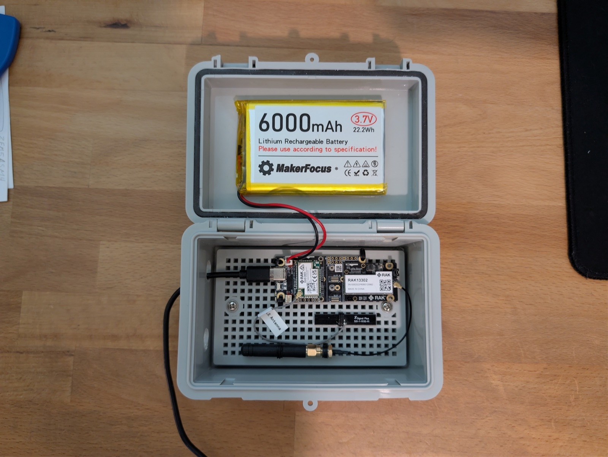

RAK3401 & RAK13302 1W Repeater
A full 1-watt repeater built from RAKwireless parts, a big battery and a weatherproof project box, for serious range at a hobbyist price.

What it is
This build is based on RAKwireless's WisMesh 1W Booster Starter Kit. A RAK3401 core module (Nordic's low-power nRF52840 chip) and a RAK13302 radio module screw onto a RAK19007 base board. The RAK13302 pairs a Semtech SX1262 LoRa radio with a signal booster that transmits at up to 1 watt (30 dBm), several times the power of a typical handheld node.
The nRF52840 uses very little power while listening, so the node runs for a long time between charges on a 6000 mAh battery. Everything goes in a weatherproof project box, using the antennas that come with the kit.
| Processor | Nordic nRF52840 on the RAK3401 (Bluetooth LE 5.0) |
|---|---|
| Radio | Semtech SX1262 LoRa with SKY66122 booster on the RAK13302, up to 30 dBm (1 W), 902-928 MHz (US) |
| Screen | None (configured from the app) |
| GPS | None |
| Antenna | Stock kit antennas: LoRa on the RAK13302's IPEX (u.FL) connector, Bluetooth on the RAK3401 |
| Power | 3.7 V LiPo battery, USB-C, or a 5 V solar panel through the base board |
| Weatherproofing | From the project box |
| Documentation | RAKwireless docs |
| Firmware | MeshCore, Meshtastic |
Role in the mesh
Repeater
What it's built for. Mount it high up, such as in an attic, on a mast or on a roofline, and the 1 W radio will relay traffic across a much wider area than a standard node.
Home base companion
It works as a companion, but it's overkill. Your phone only reaches it over Bluetooth, so the extra range mostly helps other people. For a home node, see the Heltec V4.
Pocket companion
It works, but the project box and 6000 mAh battery make it far too bulky to carry. Get a Heltec T114 or T1000-E instead.
Where to buy and what it costs
Buy the 915 MHz (US) version of the kit. RAK also sells an 868 MHz kit for Europe. If you buy the parts separately, make sure the RAK13302 is the battery-powered version, because the other version only runs from an external 5 V supply.
| Seller | Notes | Approx. price |
|---|---|---|
| RAKwireless (official) | WisMesh 1W Booster Starter Kit: core, 1 W module, base board and antennas. Plus shipping | $39 |
Prices last checked November 2026.
The build
Our 1 W repeater: the RAK starter kit and a MakerFocus 6000 mAh LiPo, sealed in a project box with the kit's stock antennas inside. There's no soldering, just screws and plugs.
Bill of materials
| Part | Qty | Notes | Approx. cost |
|---|---|---|---|
| RAK WisMesh 1W Booster Starter Kit (RAK3401 + RAK13302), 915 MHz | 1 | Includes base board and stock LoRa and Bluetooth antennas. Plus shipping | $39 |
| MakerFocus 3.7 V 6000 mAh LiPo | 1 | Check that the plug and polarity match the base board | $0 |
| Junction / project box | 1 | Holds the boards and battery | $10 |
| Total | $49 + battery | ||
Assembly notes
- Flash the firmware first (see Setup below).
- Screw the RAK3401 core and the RAK13302 module onto the RAK19007 base board. RAK says to use the screws, not just the connectors, so the modules stay seated.
- Connect the LoRa antenna to the IPEX connector on the RAK13302 and the Bluetooth antenna to the RAK3401. Never power the radio without an antenna attached. At 1 W, this can damage the module.
- Check the battery's polarity against the base board's battery connector, then plug it in.
- Mount the boards and battery in the box and close the lid.
Photos
Setup
The kit ships with Meshtastic installed. To change firmware, plug the RAK3401 in over USB-C and use a web flasher (Chrome or Edge). Always choose the RAK3401 1-watt firmware, not the standard RAK firmware, so the booster works properly. Then follow our recommended repeater settings.
- MeshCore: MeshCore web flasher, then see MeshCore repeater settings.
- Meshtastic: Meshtastic web flasher, then see Meshtastic infrastructure settings.